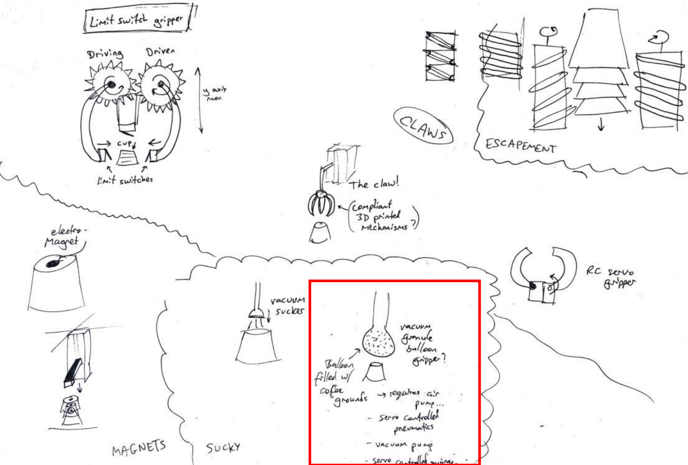
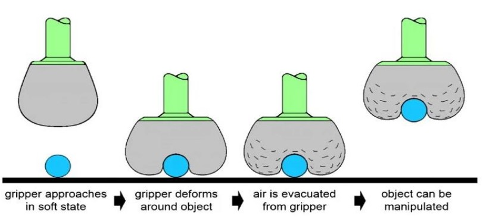
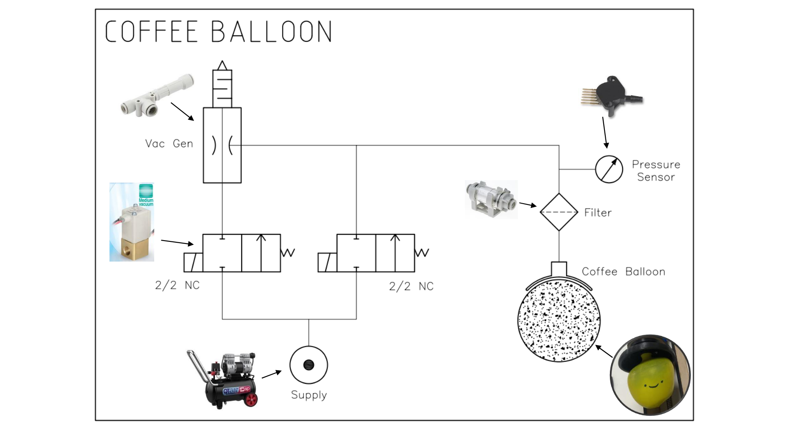
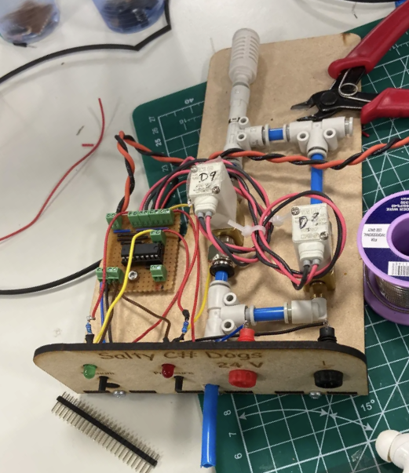
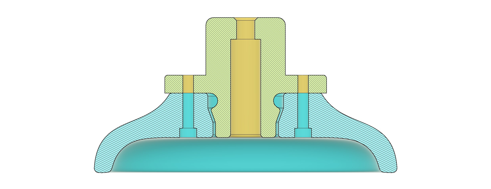
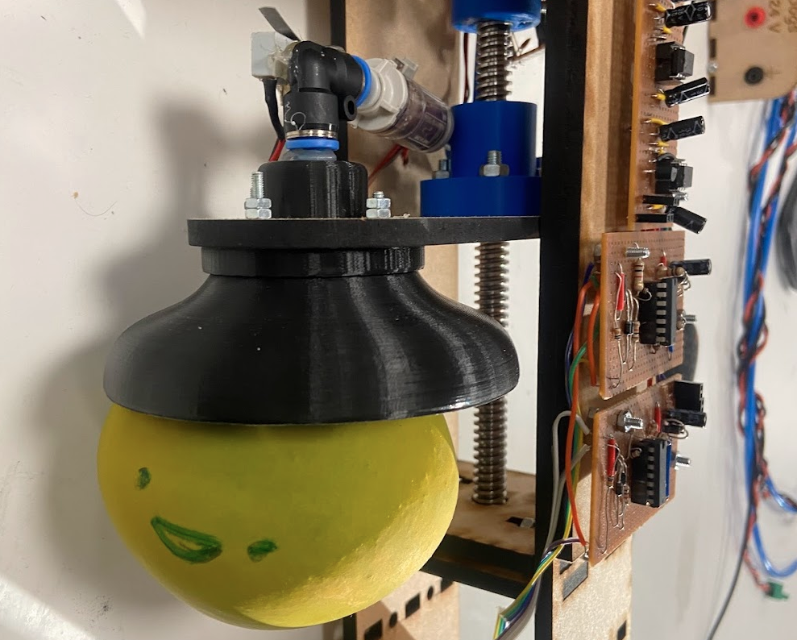
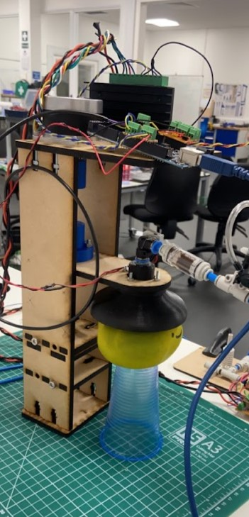
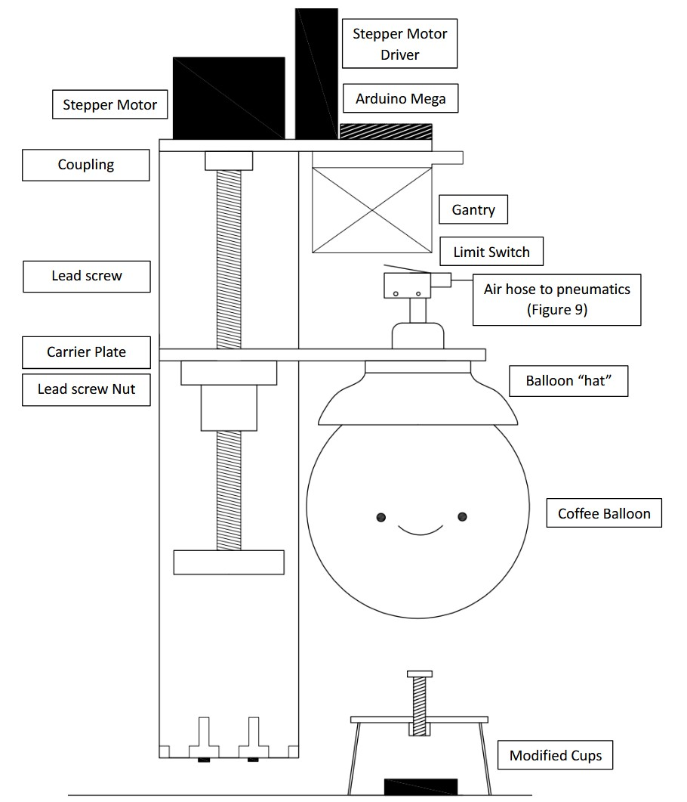
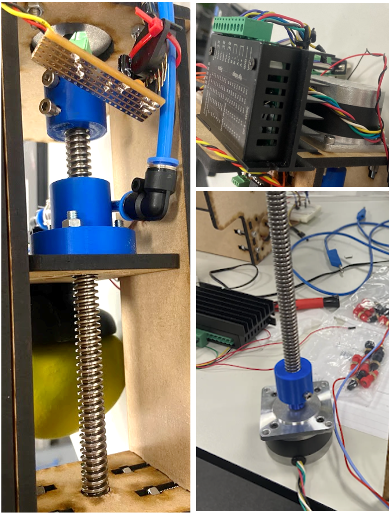
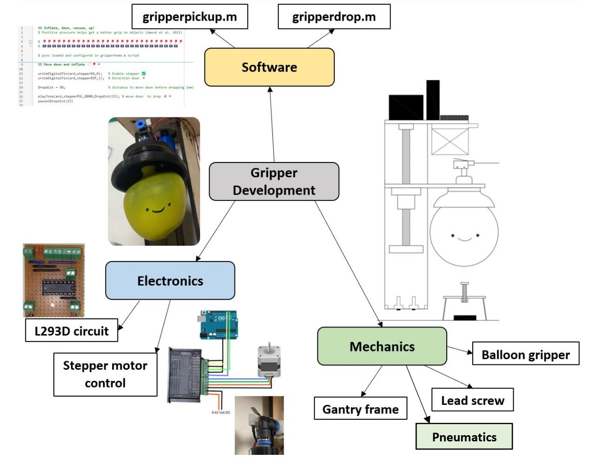

Working in teams of 3, we had to design a system which could scan for magnets and pick-and-place cups using a CNC gantry. My role was to design the pick-and-place mechanism. After some initial ideation and research, I decided to explore soft robotics and build a jamming gripper with coffee grounds inside a balloon (marking criteria included novelty and innovation, so I wanted to try something interesting!).
The 'jamming' effect is achieved by filling an elastic membrane with small granules (a balloon and coffee grounds works well!). The gripper is pressed on to the target object in a soft state to conform to its shape, before applying a vacuum to lock the granules solid around the shape of the object. The benefit of soft robotics is that it can adapt to any shape (universal gripper) and pick up almost any object.


PNEUMATIC DESIGN
A mount to hold the balloon neck was 3D printed, and a pneumatic circuit which could apply pressure or a vacuum was implemented.




MECHANICAL DESIGN
Mechanically this was quite simple. I attached the balloon assembly to a lead screw which was integrated into the frame which held the electronics and hall-effect sensors. The marker cups were modified with a bolt to make them easier to pick up.



SYSTEM INTEGRATION
The complete system integrates three key subsystems to achieve reliable pick-and-place functionality. The software layer includes scripts for gripper pickup and drop operations. The electronics layer handles stepper motor control, and pneumatic control via a pressure sensor and solenoid valve control. The mechanical layer combines the gantry frame, lead screw positioning and balloon gripper assembly into a cohesive system.
Yes - the balloon is very wobbly, but if it located correctly on the object then the vacuum system worked and the coffee balloon set solid and it could be reliably picked up and moved. There were some bugs with the magnet sensors so the system didn't function as intended, but I was pleased with how my pick-and-place balloon worked!
